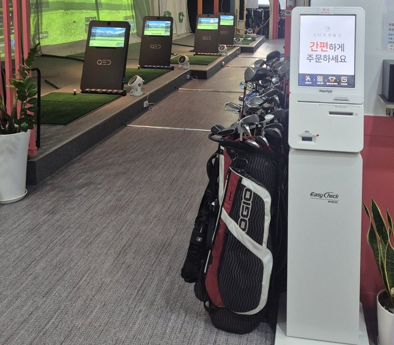

비 오는 날 해운대에서 골프 치고 싶다면 — 장산역 13번 출구에서 173미터

사진: 매장이 직접 등록한 사진
부산 겨울비는 얇고 길게 옵니다. 우산을 챙겨 나가기도 애매하고, 그렇다고 집에만 있자니 하루가 아깝고. 이런 날 골프를 칠 방법이 하나 있습니다. 밖을 안 보면 됩니다.
장산역에서 173미터
해운대 좌동, 해천빌딩 6층입니다. 장산역 13번 출구에서 173m라 우산을 펼 시간도 없습니다. 대림아크로텔 옆 건물이라고 기억하시면 찾기 쉽습니다. 엘리베이터로 6층에 올라가면 바로 타석이 나옵니다.

약도는 실제 도로·건물 위치(OpenStreetMap 실측 좌표)를 기준으로 그렸습니다. 그림을 누르면 크게 볼 수 있습니다.
6층에 도착하면 오른쪽에 무인 결제 키오스크가 있습니다. ‘기다리지 말고 간편하게 주문하세요’라고 적혀 있는 그 기계입니다. 클럽 보관대도 입구 쪽에 있어서, 자주 다니는 분들은 클럽을 두고 오갈 수 있습니다.
차로 간다면
건물 지하주차장과 타워주차장을 쓸 수 있고, 주차권에 도장을 받으면 됩니다. 비 오는 날은 주차장에서 건물까지가 제일 젖는 구간이라, 지하에 넣을 수 있으면 지하가 낫습니다.
실내라서 달라지는 것
비가 와도 스크린은 그대로 돌아갑니다. 바람도, 젖은 그린도, 동반자 취소도 없습니다. 대신 신발은 털고 들어가세요. 매트가 미끄러우면 스윙이 무서워집니다.
비 오는 날 해운대는 길이 막힙니다. 해운대로는 퇴근 시간에 특히 그렇습니다. 전화로 자리를 확인하고 나서 출발하면, 도착해서 기다리는 시간을 줄일 수 있습니다.
요금과 시간
매장 1층 배너와 네이버 지도 가격표 기준으로 스크린 18홀 10,000원, 연습장 1시간 10,000원입니다. 운영 시간은 네이버 지도에 24시간 연중무휴로, 김캐디에는 00:00~23:30으로 적혀 있어 표기가 다릅니다. 늦게 움직이는 날은 전화 한 통이 안전합니다.
051-747-9933비 오는 날은 자리가 일찍 차는 편입니다. 출발 전에 전화해 보세요.
- 가게 이름
- 간판 WON 스크린골프 · 등록명 윈스크린골프연습장
- 자리
- 부산 해운대구 해운대로774번길 11, 해천빌딩 6층 (장산역 13번 출구 173m, 대림아크로텔 옆 건물)
- 타석
- QED 4타석 · 일반 3타석 (김캐디 매장 등록 정보)
- 전화
- 051-747-9933
자료
- 부산광역시 해운대구 신고체육시설업 현황 — 공공데이터포털(행정안전부 지방행정인허가데이터). 상호 윈스크린골프연습장·업종 골프연습장업·도로명주소 확인
- 네이버 지도 플레이스 — 윈스크린골프연습장 (2026-11-18 확인)
- 요금: 매장 1층 배너(2026-11-17 촬영 사진)
- 타석 구성: 김캐디 매장 등록 정보(2026-11-18 확인)